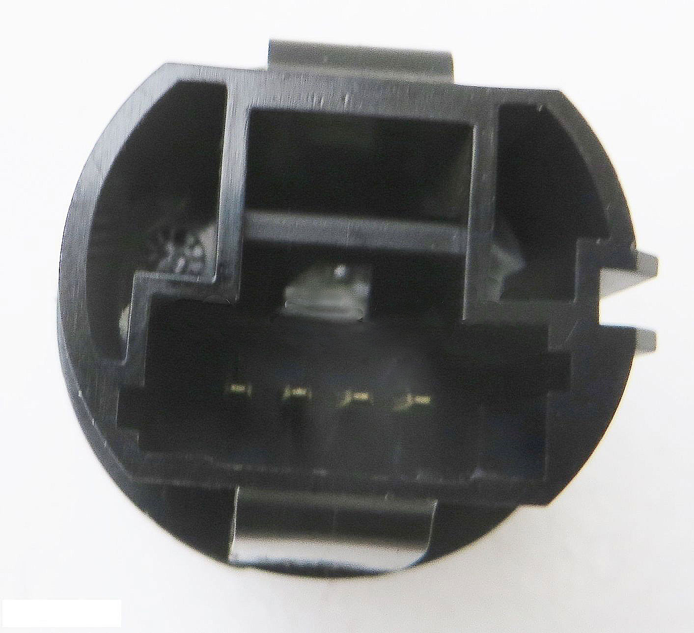

INSTALACION DE DESACTIVADOR DE START STOP
Instrucciones de montaje:
Aqui no indicamos como se instala en un vehiculo en concreto aqui vamos a enseñar a identificar los cables en donde debemos conectar el circuito. Y servira para todos los vehiculos. Un consejo, no fiaros nunca de los colores de los cables ya que no estan estandarizados.
1º Debemos encontrar un positivo (+ 12 voltios) y un negativo (- masa). Usaremos un polimetro, lo pondremos en modo de continuidad para que pite cuando hay continuidad en un cable. Lo primero que haremos sera con el contacto apagado, quitar el conector que va al mechero y tocando con una de las puntas del polimetro a un tornillo que haga masa, con la otra punta miraremos con cual de los cables del conector del mechero nos pita, con el que pite sera el negativo, "a este cable debemos ponerel cable negro de nuestro circuito". El otro sera el positivo " En algunos casos lleva 3 cables". Cuando esto suceda, para averiguar cual es el positivo, poniendo el voltimetro en voltios en (continua =), con la punta negra en el tornillo que haga masa y con el contacto puesto mirar cual de los dos cables sin identificar nos da 12 voltios, el que de 12 voltios sera el positivo, " y sera el que nos interesa, ya que a este cable conectaremos el cable rojo de nuestro circuito", el tercer cable sera para la luz nocturna, para comprobarlo encendemos las luces de posicion y entonces el tercer cable tambien tendra 12 voltios, pero este cable no nos interesa.
2º Ahora nos toca encontrar los cables del pulsador, para ello vamos a estudiar los tipos de pulsadores que nos podemos encontrar, ya que hay inumerables, cambian en cada marca y modelo de vehiculo.
a) Pulsadores simples son los que solo tienen una funcion, son los mas faciles de identificar, estos tienen 3 cables, uno es masa, "a este cable debemos ponerel cable negro de salida de nuestro circuito" otro es para la luz de cortesia, estos dos ya hemos indicado como identificarlos en el apartado 1º y el tercer cable es el que nos interesa, ya que este cable es el que activa el pulsador " este cable le conectaremos al cable Azul de salida de nuestro circuito" Para probar que es correcto identificaremos en el pulsador los pines que hemos identificado en el conector, con el polimetro en continuidad , veremos que al pulsar el pulsador el polimetro pita y al soltarlo deja de pitar.

Hay veces que el pulsador tiene 4 pines, uno es el cumun, que es la masa, otro es para el pulsador, otro para la luz que indica que esta activado el sistema START-STOP y otro mas para la luz de cortesia. Si lleva mas pines, es porque lleva varios pìnes comunes, aunque la mayoria de las veces no llevan cables asociados.
b) Pulsadores multiples, son los que en una carcasa tienen dos o mas pulsadores, estos son de dos tipos, uno que tienen pines totalmente independientes y otro tipo que tienen pines comunes.
Los que tienen los pines independientes, es cuestion de paciencia y ir probando con el polimetro en continuidad cual son los dos pines que activan el pulsador que nos interesa, una vez identificados los pines, solo falta saber cual es el negativo y cual el de activacion, se sabe actuando como en el punto 1º.
Los que tienen pines comunes son mas complicados, y sera necesario desmontarlos para ver si tienen pulsadores fisicos o pulsadores dibujados en la pista del circuito impreso. si tiene pulsadores fisicos habra que estañar el cable azul a una patilla del pulsador y el cable negro de salida a la patilla contraria del pulsador. Cuando el puldador esta dibujado en el circuito impreso habra que buscar un punto donde poder estañar nuestros cables, en algunas placas es un tanto complicado, ya que podemos estropear la placa de circuito impreso y dejarla inservible.